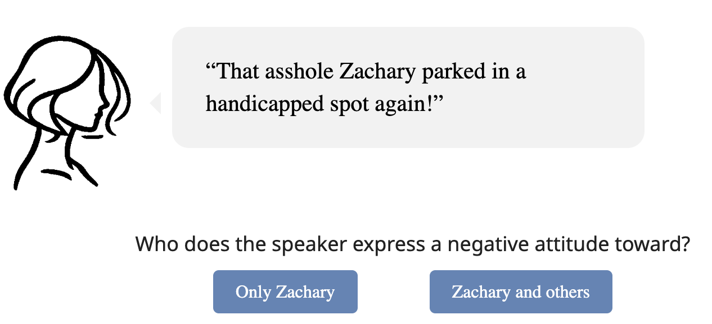
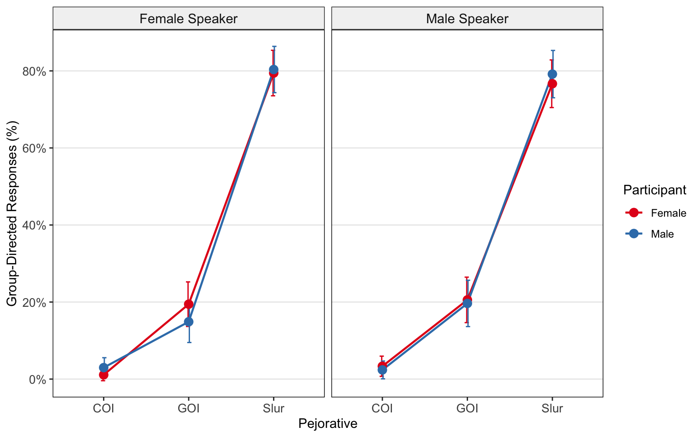
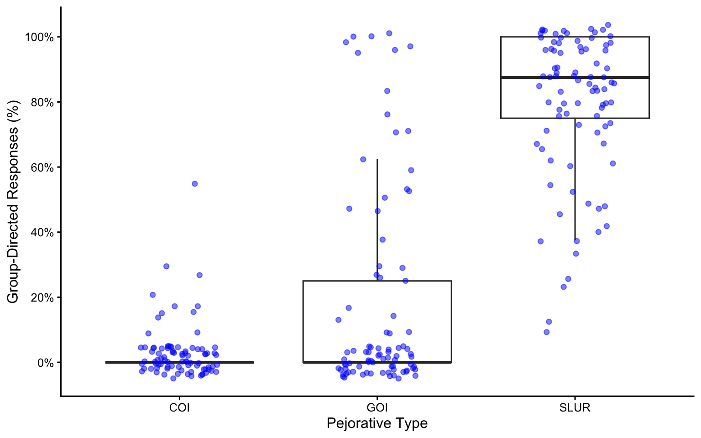
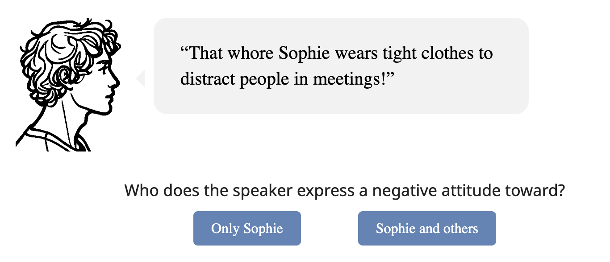
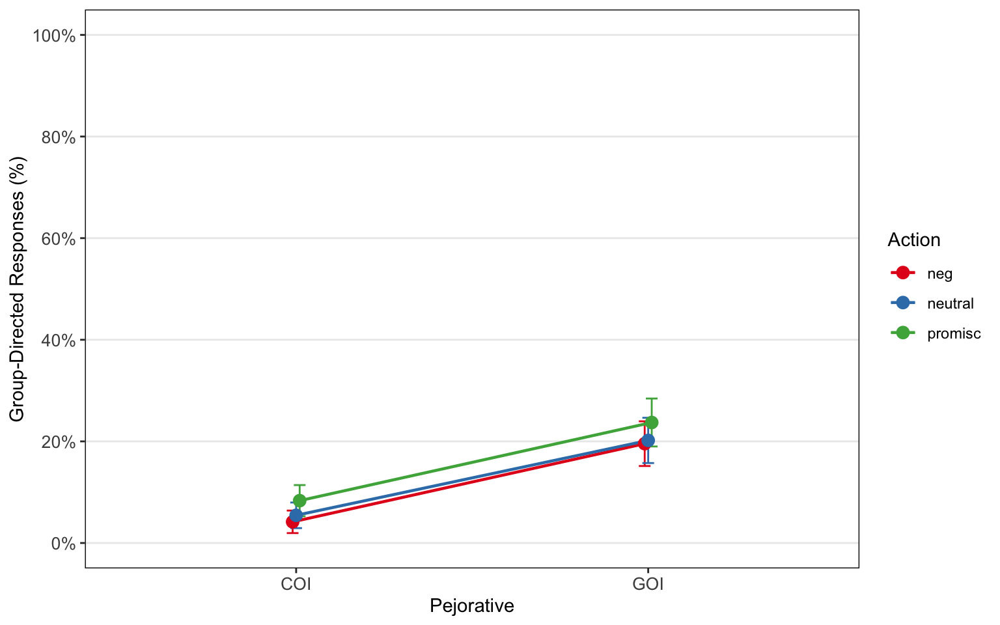
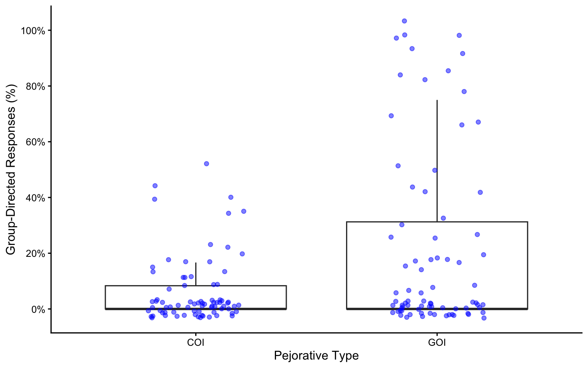
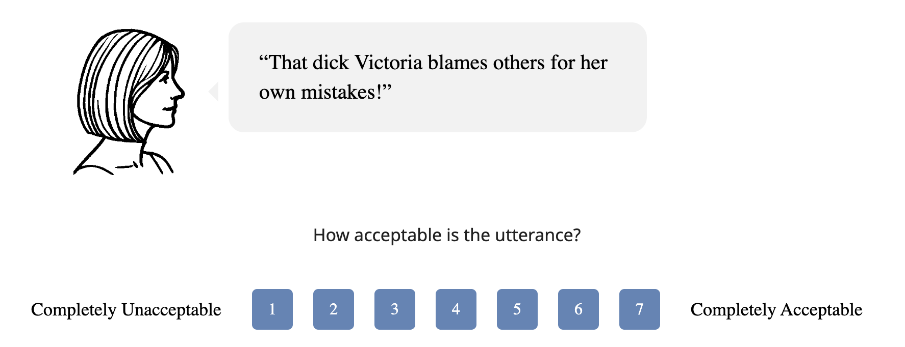
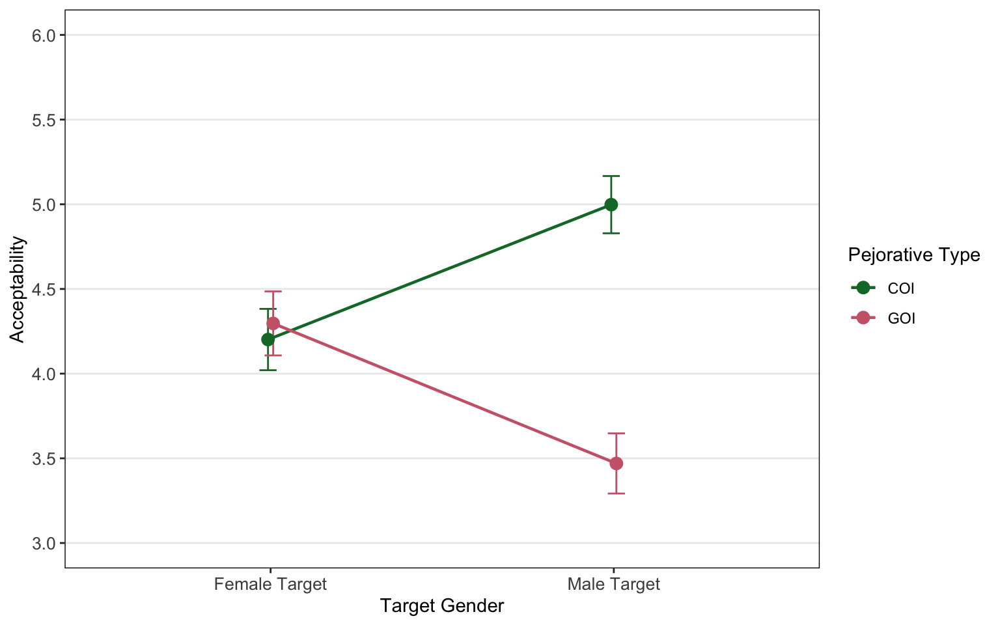
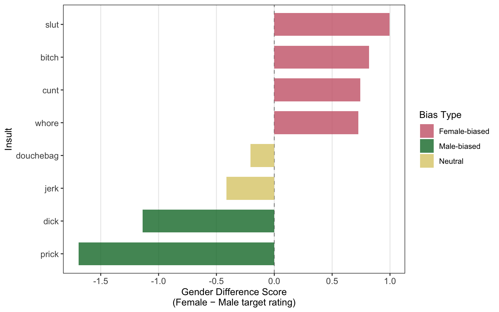

Author · 2026
This article investigates gender-oriented pejoratives (GOPs) (e.g., slut, cunt) and their classification within contemporary theories of derogatory language. Since Ashwell (2016), these terms have commonly been categorized as slurs, similar to slurs of sexual orientation or ethnicity (e.g., faggot, sp*c).
We present two experimental studies demonstrating that GOPs function more like particularistic insults (e.g., jerk, asshole) in that they primarily express the speaker’s negative attitude toward a specific target rather than conveying group-derogating meaning.
A third study demonstrates that GOPs occur in gendered variants, with certain expressions (e.g., prick) predominantly used for male targets and others (e.g., bitch) for female targets. This contrasts with neutral particularistic insults (e.g., asshole), which can be felicitously used regardless of the target’s gender.
We conclude by discussing the implications of these findings for the classification of GOPs within different theoretical approaches to slurs.
Keywords: Gender-Oriented Pejoratives; Slurs; Insults; Derogatory Language; Group Derogation
This paper investigates gender-oriented pejoratives (GOPs) (e.g., slut, bitch, cunt) and their classification within theories of derogatory language. Are GOPs slurs — expressing group-derogating meaning — or particularistic insults — targeting only the individual referent?
GOPs are frequently classified alongside canonical slurs based on ethnicity (e.g., n***er, sp*c), religion (e.g., k*ke), or sexual orientation (e.g., faggot) (Croom, 2011), (Hom, 2008), (Cepollaro, 2015).
Following Ashwell (2016), this view has gained wide acceptance:
Ashwell (2016) argues GOPs qualify as slurs because they:
GOPs have not been investigated experimentally regarding their slur-like behavior — this has instead been taken for granted based on introspective intuitions (Diaz-Legaspe, 2020), (Fasoli, Carnaghi, & Paladino, 2015), (Ashwell, 2016).
This is problematic for two reasons:
🎯 Research Goal Three experimental studies provide the first empirical test of whether GOPs exhibit slur-like group-derogating behavior or function instead as particularistic insults — targeting only the individual referent.
Slurs — expressions conveying a negative attitude toward both a specific target and their social group (e.g., faggot, sp*c) (Anderson & Lepore, 2013), (Nunberg, 2018)
Particularistic Insults — expressions conveying a negative attitude toward a specific individual only, without group-derogating force (e.g., jerk, asshole) (Domaneschi, Cepollaro, & Stojanovic, 2025), (Cepollaro, Domaneschi, & Stojanovic, 2021)
Gender-Oriented Pejoratives (GOPs) — derogatory expressions targeting gender role violations (e.g., slut, bitch, cunt, prick) — classified as slurs by (Ashwell, 2016) but empirically untested
Study 1 examines the slur-like behavior of GOPs through a forced-choice task, using a 3×2×2 design:
Participants saw utterances of the form “That [pejorative] NAME [slightly negative action]!” embedded in speech bubbles, preceded by a drawn facial profile of the speaker. They indicated whether the speaker expressed a negative attitude toward only the named target (“Only NAME”) or also toward a broader social group (“NAME and others”) — with the latter treated as a group-derogating interpretation.



Model (Matuschek, Kliegl, Vasishth, Baayen, & Bates, 2017), (Bates, Mächler, Bolker, & Walker, 2015)
glmer(response_binary ~
pejorative_type * participant_gender * speaker +
(1 + pejorative_type | submission_id) +
(1 | item_number),
family = binomial)Study 2 follows the same methodology as Study 1, using a 2×3 design:
Participants saw utterances of the form “That [pejorative] NAME [action]!” and indicated whether the speaker’s negative attitude targeted only the named individual or also a broader social group.



Model (Matuschek et al., 2017), (Bates et al., 2015)
glmer(response ~ pejorative_type * action +
(1 + pejorative_type + action | submission_id) +
(1 | itemname),
family = binomial)Study 3 investigates whether GOPs and COIs exhibit gender-specific felicity constraints — are some expressions more acceptable when directed at female vs. male targets? The study uses a 2×2 design:
Participants rated the acceptability of utterances on a 7-point Likert scale from 1 (completely unacceptable) to 7 (completely acceptable). Response buttons activated with a 3-second delay.



Model (Matuschek et al., 2017), (Bates et al., 2015)
lmer(selected_option ~ target_gender * pejorative +
(1 + target_gender + pejorative | submission_id) +
(1 + target_gender + pejorative | itemname))Key results:
Gender difference scores (female − male target rating) for each token were submitted to a k-means clustering analysis (Maechler, Rousseeuw, Struyf, & Hubert, 2025).
Three clusters emerged:
Prior literature has treated GOPs almost exclusively as slurs, relying primarily on theoretical argumentation without empirical validation. The findings of the present studies suggest that this classification is not empirically supported. Both Study 1 and Study 2 show that GOPs pattern with COIs in that they express a negative speaker attitude toward the pejorative target only. GOPs therefore appear to function as particularistic insults directed at female referents, just as COIs function as particularistic insults typically directed at male referents — a pattern further supported by Study 3’s tripartite gender-bias structure.